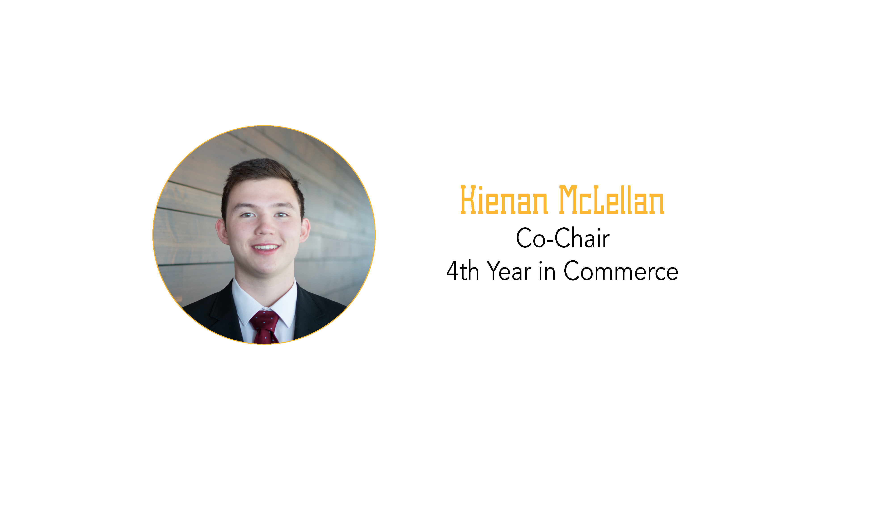

The Basic Income Approach
Kienan McLellan - 27 September, 2017

For this post I will go on a bit of a different route than the previous two posts, and focus on a topic that interests me in modern philanthropy; the concept of a guaranteed living wage. We often think of ourselves as charitable when we donate bread, soups, and other in-kind items to food banks and charitable organizations alike, even though what is actually needed is better known by the organization and the people that benefit from it. We do this because we have an idea of how we would want this money to be spent, when in reality those in need might not benefit from it.
Trust. It’s a concept that’s hard to gain as an organization when you aren’t directly providing benefits to the people funding you. At the bare minimum, people don’t want to feel like they are being scammed. CEOs of charities taking seven-figure salaries, GoFundMe pages run by con artists, and frivolous lawsuits against anyone using the colour pink; in a sector that is driven by hope it’s hard not to hold back because of fear. It’s the reason why two of the three largest charities in the United States are ones that thrive on in-kind donations of food and medicine. Yet this distrust in those less fortunate is underlined by a societal belief that it is somehow a person’s own wrongdoing for being in such a situation.
Here’s where I’ll talk a new model of charitable giving that goes against this: the Basic Income approach. An organization aptly named GiveDirectly does just what you think; they take your donations, take 9% of it for operational expenses, and direct the other 91% directly to the bank accounts of impoverished individuals in different African villages. It sounds like something straight out of a TV spot with Sarah McLaughlin, but this organization has lower overhead and much more transparency. The results of this project have been astounding. First, in direct opposition of what society believes with directly giving money to the poor, there was no change in spending on drugs and alcohol. Instead, it turns out when you actually believe in people to make their own choices, they choose to improve their situation. Examples of spending range from buying life saving medication and food to buying a family’s first piece of furniture.
Now this post isn’t a plug for this organization at all. There have been some genuine problems with the entire experimental nature of this project. For instance, some people had been receiving money only to have the payments stop after one year due to a strategic re-evaluation. However, it is meant to show that the process of poverty alleviation is difficult partly because of barriers in our society on entrusting strangers with money.
It’s not naïve to want to make a change. Every dollar and every act of kindness has a large effect on many, and every person willing to make a difference can make a difference. No matter how old you are or how much experience you have, all that is needed is determination and goodwill. It seems nowadays, more than ever, people are caring about working for something they believe in, going against the grain and creating fantastic things and I’m excited to see what this world can accomplish.